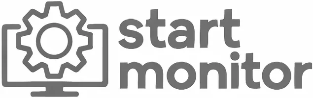

⇄
Automatización de flujos de trabajo
Conectamos pasos, responsables y herramientas para que cada tarea llegue a quien corresponde.

Consulta las opiniones publicadas en la ficha de FlujoPro.
Hay tareas que se repiten cada día. Las convertimos en flujos claros, conectados y fáciles de seguir.
Conectamos pasos, responsables y herramientas para que cada tarea llegue a quien corresponde.
Solicitudes, validaciones y avisos que siguen su recorrido sin cadenas interminables de mensajes.
Capturamos información, generamos documentos y organizamos los datos sin volver a copiarlos.
Hacemos que correo, hojas de cálculo, CRM y otras plataformas compartan la información necesaria.
Los plazos dejan de depender de la memoria: avisos y estados para saber qué falta y quién lo lleva.
Analizamos cómo trabajáis y diseñamos automatizaciones que encajen con vuestro proceso real.
Menos tareas.
Más ideas.
Mejor flujo.
Las tareas repetitivas dejan de ocupar las horas de tu equipo.
Información y avisos que pasan de una herramienta a otra.
Pasos definidos para que el proceso no dependa de recordar cada detalle.
Flujos que se ajustan cuando cambian tus necesidades.
Primero entendemos tu proceso. Después diseñamos el flujo que lo hace más sencillo.
Qué tarea se repite y dónde se pierde tiempo.
Definimos pasos, conexiones y responsables.
Configuramos y comprobamos el recorrido.
Un proceso más claro para el día a día.
Reserva una asesoría de 30 minutos. Cuéntanos qué se repite en tu empresa y estudiamos cómo automatizarlo.
Abrir calendario en otra ventana ↗Cuéntanos qué proceso quieres automatizar, qué problema tienes ahora y para cuándo lo necesitas.
Teléfono de atención: +34 910 05 40 12
En FlujoPro ayudamos a empresas que pierden tiempo moviendo datos, solicitando aprobaciones y repitiendo tareas entre distintas herramientas. Diseñamos flujos de trabajo automatizados para que la información avance sin depender de copiarla a mano.
Estudiamos tus procesos actuales y planteamos soluciones para conectar aplicaciones, gestionar formularios, coordinar equipos, enviar notificaciones y dar seguimiento a las tareas. Cada automatización se adapta a la forma de trabajar de tu empresa.
Trabajamos desde Madrid con empresas de toda España. Si hay un proceso que se repite cada día, cuéntanoslo: podemos analizar qué pasos tiene sentido automatizar y cuáles necesitan seguir en manos de tu equipo.